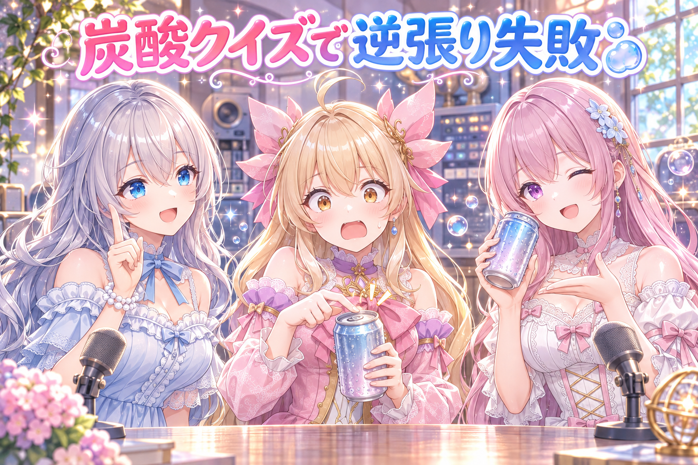
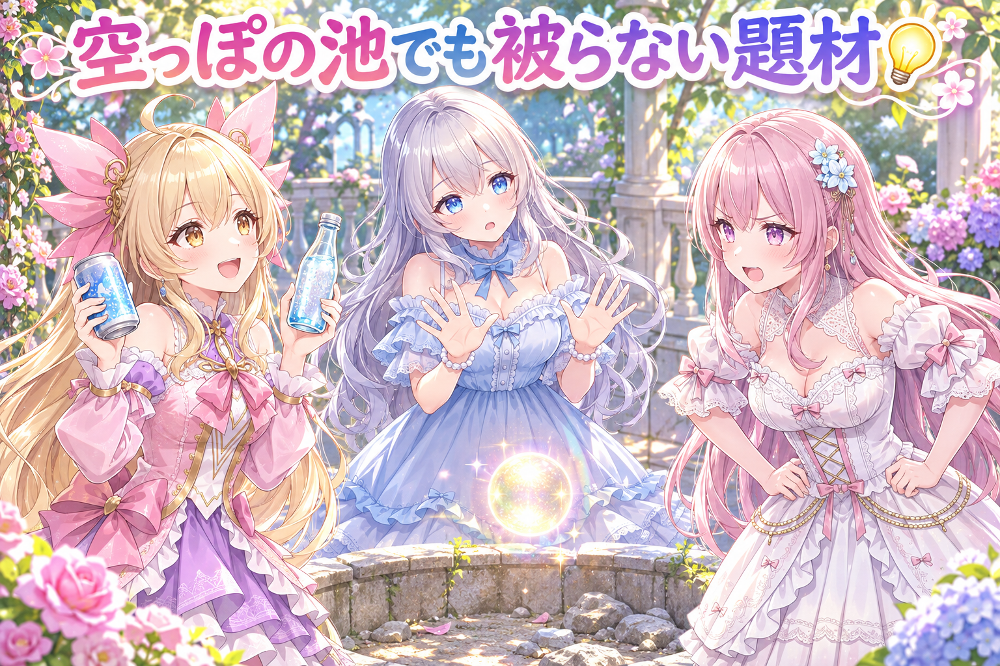
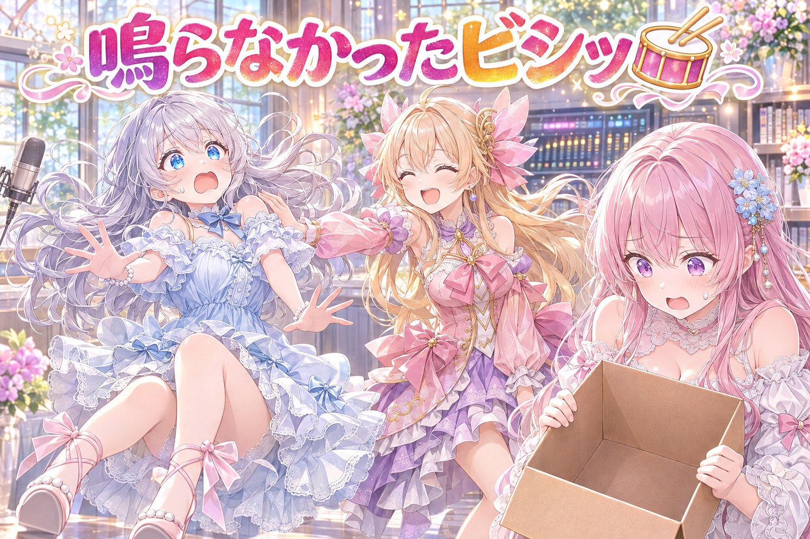
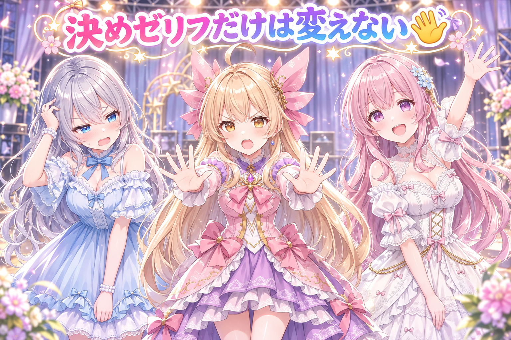
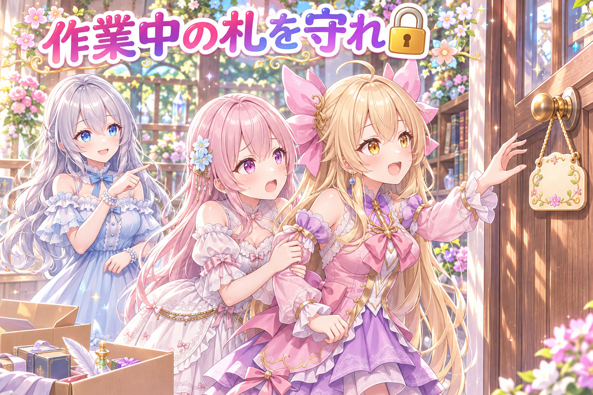
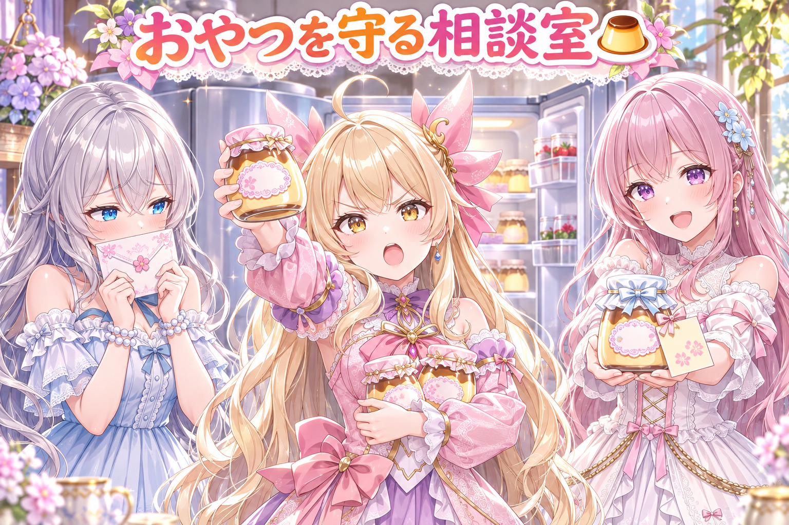

📌 3行まとめ
- 炭酸を振ると噴き出す理由を探るアニメと、ショート漫画2本（枕投げ・冷蔵庫のプリン）を公開した
- アニメの題材の候補がなくなっても、これまでに出した題と被らない題材をAIに考えさせて止まらないようにした
- ツッコミの効果音が鳴っていなかった不具合を直し、〆のあいさつは最後の決めゼリフだけ残して前半を毎回変える決まりにした

ルピナス （笑顔）
こんばんは〜、常連リスナーさん。今夜もAIBSの小さな放送室、ドアを開けて待ってたよ。

アイリス （大笑い）
お姉ちゃん！前回、ツッコミの音と吹っ飛ぶ音をちゃんと分けたじゃん？あれで完璧になったと思ってたのに〜！

フィオナ （考え中）
分けたはずのツッコミの音が、実は鳴っていなかったんです……。今日はその後始末の回でもありますね。

ルピナス （ふつう）
そう、仕分けた箱の片方が空っぽだったのね。あと新作アニメの公開と、題材が尽きたときの仕組みづくりもあるよ。夜遅くまでの作業も続いたから、みんなもお水を一杯飲んでから聞いてね。
1. 🫧 炭酸のなぞアニメと、ショート2本を公開

今日は三姉妹の動画が3本出ました。メインは「振った炭酸はなぜ噴き出すの？」「缶をトントンすれば止まるって本当？」という身近な疑問を、三姉妹がドタバタ実験しながら理由を順番に追いかけるアニメです。
あわせて、夜の寝室で枕投げの決着をつけようとするショート漫画と、名前を書いたはずの冷蔵庫のプリンが消えて名探偵アイリスが犯人さがしをするショート漫画も公開しました。最新の動画はX（https://x.com/irisfionaAIBS）から見られます。
ルピナス （ドヤ顔）
では炭酸アニメ公開記念、AIBSクイズ〜！第1問。炭酸を振ると、中のガスは増える？増えない？

アイリス （笑顔）
はいっ！増える！振ったぶんだけ元気になって、ガスが倍になる！

ルピナス （大笑い）
それは振ったアイリスが元気になってるだけね。

フィオナ （ふつう）
正解は「増えない」です。振って増えるのはガスではなく、泡が生まれるきっかけになる小さな泡のタネなんです。タネが多いほど、開けた瞬間に一気に泡になってしまいます。
ルピナス （笑顔）
第2問。振った缶を指でトントンすると、こぼれる量は減る？

アイリス （ドヤ顔）
減る！だってみんなやってるもん！みんながやってることは正しい！
フィオナ （考え中）
アニメの中でも紹介した、大学の研究者さんの実験では……トントンしても、こぼれる量はほとんど変わらなかったそうです。

アイリス （衝撃）
あたしの人生のトントン、全部ムダだったの！？
ルピナス （ふつう）
第3問。噴き出しにくいのは、冷たい炭酸とぬるい炭酸、どっち？

アイリス （考え中）
……今度こそ逆張りする。ぬるい方！

フィオナ （ウインク）
残念ながら、冷たい方です。冷たいほどガスがよく溶けているので、ぬるい炭酸ほど噴きやすいんです。

アイリス （泣き）
逆張りしたら逆張りされた……。もういいもん、ショートのプリン事件の方で名探偵やるから！
ルピナス （笑顔）
その名探偵、取り調べで私を疑ってたよね？ 炭酸もプリンも、結局いちばん騒がしいのはアイリスなんだよね。
📝 ポイント（初心者向け解説・技術メモ・まとめ）
- 初心者向け解説：炭酸を振るのは、ガスを増やすんじゃなくて「泡の出口」をたくさん作ること。ドアがいっぱい開いたお店に、お客さんが一気に押し寄せるイメージだよ🫧
- 技術メモ：雑学アニメは「疑問→理由を1つずつ→意外なオチ」の順で、数字はボトル内の圧力のように身近な単位や比較で見せる構成にしている。ショート漫画は導入1行のセリフと状況説明だけで、続きが気になる形にそろえた
- ひとことまとめ：炭酸は振らずに冷やして待つ。待てない人は、アニメで笑って待つ。
2. 💡 題材の池が空っぽでも、番組は止めない

アニメは、あらかじめ貯めておいた題材の候補（題材の池）から1つずつ選んで作っています。ところが、あるジャンルの池が空っぽになっていると、そこで作業が止まってしまう問題がありました。
そこで今日、池が空のときは「これまでに出した題の一覧」をAIに渡して、それと同じ・ほぼ同じにならない新しい題材を1つ考えさせる仕組みに直しました。あわせて、池に貯める題材の書き方に同じ言葉ばかり出てくる偏り（たとえば「赤面」「室内」が全体の3〜4割）を見張る検査も効いていて、新しく足す題材ではその言葉を避け、場面に合う別の表情や場所を選ぶようにしました。
アイリス （ふつう）
ねえ、池が空っぽなら、前に人気だった題をもう1回やればよくない？炭酸パート2とか！

フィオナ （怒り）
反対です。常連リスナーさんは前の回も見てくださっているんですよ。同じお話が来たら「あれ？」ってなります。
アイリス （ドヤ顔）
じゃあ「ほぼ同じ」ならセーフ！炭酸を、サイダーに変える！

フィオナ （呆れ）
それを「ほぼ同じ」と言うんです……！

ルピナス （考え中）
はい、二人とも半分ずつ正しいの。止まらないのはアイリス案、被らないのはフィオナ案。だから今回は、出した題の一覧をAIに見せて「これと被らないのを考えて」ってお願いする形にしたんだよね。

アイリス （びっくり）
AIに「前に出した題」を見せるんだ。あたしの宿題を先生に見せてから、違う宿題をもらう感じ？

フィオナ （笑顔）
たとえは独特ですが、だいたい合っています。それと、題材の書き方にも癖が出やすいので、同じ言葉ばかりにならないよう検査が見張っているんです。
ルピナス （大笑い）
全員ほっぺ赤くて、全員お部屋の中。そういう池になりかけてたんだよね。
アイリス （照れ）
……それ、あたしの普段の顔と居場所じゃん。

フィオナ （大笑い）
アイリスちゃんが池の偏りの原因だったんですね。
📝 ポイント（初心者向け解説・技術メモ・まとめ）
- 初心者向け解説：お弁当のおかずが尽きたら、今まで作ったメニュー表を見ながら「まだ作ってない一品」を考えるのと同じ。メニュー表があれば、昨日と同じおかずにならないよ🍱
- 技術メモ：候補の在庫が0件のときにLLMで生成へフォールバックし、プロンプトに既出タイトル一覧を入れて重複・類似を禁止する。在庫の語彙は出現率の上限を検査し、偏った語（今回は表情語と場所語）は新規追加分で別の語に置き換える
- ひとことまとめ：在庫切れでも止めず、被らせず、癖も見張る。
3. 👀 今日のやらかし

前回、ツッコミの音と吹っ飛ぶ音を別々に分ける決まりを作りました。ところが確認してみると、吹っ飛ぶ音は鳴るのに、肝心のツッコミの「ビシッ」が無音のまま。叩いているのに音がしない、不思議なツッコミになっていました。
ツッコミの瞬間にも確実に効果音が入るよう直し、さらに1つのツッコミに音を2つ以上重ねる決まりにしました。音が1つだけだと、どうしても軽く聞こえてしまうからです。
フィオナ （考え中）
お姉ちゃん、少しよろしいですか。前回の決まりで、ツッコミの音と吹っ飛ぶ音を分けましたよね。
ルピナス （ふつう）
うん、ちゃんと仕分けたよ。前回のタイトルにもしたくらい。

フィオナ （あわあわ）
その、仕分けた箱の、ツッコミ側が……空っぽでした。
アイリス （大笑い）
えー！じゃあアニメのあたし、ずっと無音でお姉ちゃんの肩を叩いてたの！？ただのマッサージじゃん！

ルピナス （衝撃）
しかも吹っ飛ぶ音だけは鳴るんだよね。叩かれた音がしないのに、ドーンって飛んでいく私。
アイリス （ドヤ顔）
お姉ちゃん、自分から飛んでる人みたいになってる！
フィオナ （ふつう）
ですので、ツッコミの瞬間に必ず音が入るように直しました。そして音は2つ以上重ねる決まりです。叩く音と、空気が鳴る音、のように。
アイリス （笑顔）
2つ！じゃああたし、10個重ねたい！ビシッ、バシッ、ドカッ、ピンポーン、パンパカパーン！

ルピナス （呆れ）
それはツッコミじゃなくて、くす玉が割れてるんだよね。
フィオナ （大笑い）
でも、アイリスちゃんのツッコミが当たった瞬間に正解のチャイムが鳴るのは、少し見てみたいです。
ルピナス （笑顔）
採用しません。2つ以上、多すぎず。ビシッは今日からちゃんと鳴ります。
📝 ポイント（初心者向け解説・技術メモ・まとめ）
- 初心者向け解説：お茶碗とお皿を別々の棚に分けても、片方の棚が空っぽならご飯は盛れないよね。分けたあとに、中身が入っているかを確かめるのが大事なの🥁
- 技術メモ：効果音を役割ごとにカテゴリ分けしたら、各カテゴリに素材が実在し、書き出し後の音声に実際に乗っているかまで検査する。打撃系は1発だけだと軽く聞こえやすいので、アタック音と余韻の音など2種以上を重ねるルールにした
- ひとことまとめ：仕分けた箱は、空っぽかどうかまで見る。
4. 👋 〆のあいさつは「半分だけ」毎回変える

アニメの最後には、三姉妹の3行のあいさつが入ります。これまでは毎回同じ文だったので、続けて見る人には少し単調でした。
そこで、前半の2行はその回の内容に合わせて毎回変え、最後の「せーのっ！まったねー！」だけは番組の合図として残す決まりにしました。変える部分と変えない部分をはっきり分けるのがポイントです。
ルピナス （笑顔）
はい、ここからは小芝居。今日の〆のあいさつ、本番前のリハーサルをしまーす。アイリス、どうぞ。
アイリス （笑顔）
炭酸は振らずに冷やして待とうね！
フィオナ （ふつう）
わたしは、トントンはおまじないだと思って楽しみます。
ルピナス （大笑い）
そこで私が……全部変えちゃおうかな！今日の気分で「ごきげんよう！」とか！

アイリス （怒り）
お姉ちゃんストップ！最後の1行は残す決まりでしょ！そこ変えたら、見てる人がどこで手を振ればいいか分かんなくなる！

ルピナス （照れ）
……アイリスに正しく止められると、なんだか悔しいよね。
フィオナ （ウインク）
前の2行は毎回お着替え、最後の1行は制服、ですね。
アイリス （ドヤ顔）
そういうこと！じゃあ二人とも、いくよ。せーのっ！

ルピナス （びっくり）
まって、今それ言ったら本番みたいに終わっちゃう！まだ記事の途中だよ！
📝 ポイント（初心者向け解説・技術メモ・まとめ）
- 初心者向け解説：毎朝ちがうお洋服を着ても、いつものリボンだけは付けておくと「あの子だ！」って分かるよね。決めゼリフはそのリボンなの🎀
- 技術メモ：締めの台本を「回ごとに生成する可変部」と「固定の合図部」に分け、固定部が欠けたり書き換わったりしていないかを検査に入れた。修正した回は通しの確認と単体の検査が両方通るまで直す
- ひとことまとめ：変えていい所と、変えちゃいけない所を先に決める。
5. 🔒 「作業中」の札は、片付けで動かさない

アニメ作りの途中では、作業中のフォルダに「今この作業が動いています」という目印の小さなファイルを置いています。ところが、作業場所を整理する片付けの処理が、この目印まで一緒に動かしてしまう問題がありました。目印がなくなると、別の作業が「誰も使っていない」と勘違いして割り込みかねません。
片付けのときは目印を動かさないように直しました。あわせて、この目印まわりの試験が、Windows の文字コードの違いでファイルを読み損ねて失敗していたのも直しています。
アイリス （笑顔）
実況します！アイリス選手、作業部屋のお片付けに突入！散らかったものをどんどん箱へ！
アイリス （ドヤ顔）
おっと、ドアノブに札がかかっている！これも片付けちゃえ〜！
フィオナ （あわあわ）
アイリスちゃん、それは「使用中」の札です！外したら、だれかが入ってきてしまいます！
アイリス （びっくり）
えっ、お風呂の「入ってます」の札みたいなもの？
ルピナス （ふつう）
そうそう。だから片付けのときは札だけは動かさない、って決めたの。それと、札のことを確かめる試験が、文字の読み方の違いで読み間違えて失敗してたのも直したよ。
アイリス （考え中）
札の字が読めなくて試験に落ちる……あたしも漢字テストでよくある。
フィオナ （大笑い）
アイリスちゃんの場合は、読み方の設定ではなく、たぶん覚えていないだけかと……。
📝 ポイント（初心者向け解説・技術メモ・まとめ）
- 初心者向け解説：お部屋のお掃除で、ドアの「入ってます」札まで片付けちゃうと大変なことになるよね。片付けにも「触っちゃダメなもの」があるの🚪
- 技術メモ：作業中を示すロックファイルを整理・移動処理の対象から除外した。試験でファイルを読むときに文字コードを省略すると、日本語版Windowsでは cp932 として読まれて失敗することがあるので、open(path, encoding='utf-8') のように明示する
- ひとことまとめ：片付けは「動かさない物」を決めてから。文字コードは省略しない。
6. 🎁 お楽しみコーナー：三姉妹の相談室

今日のお悩みはこちら。「冷蔵庫のおやつに名前を書いているのに、家族に食べられてしまいます。どうすれば守れますか？」
ルピナス （笑顔）
今日の相談、ショート漫画とまる被りね。アイリス、当事者としてどうぞ。
アイリス （怒り）
名前を大きく書く！三方向から書く！ふたの裏にも書く！
フィオナ （考え中）
名前を増やしても、食べる人は食べてしまうと思います。いっそ、家族の分も買っておいて「あなたの分はこっちです」と付箋を貼るのはどうでしょう。
アイリス （衝撃）
フィオナ、平和すぎる！相手にもプリンをあげたら、こっちの負けじゃん！

フィオナ （ドヤ顔）
勝ち負けではなく、プリンが無事なら勝ちです。
ルピナス （ふつう）
私はフィオナ案に一票。ついでに、冷蔵庫の一番奥に置くといいかもね。手前にあると、つい手が伸びちゃうから。
アイリス （考え中）
……お姉ちゃん、なんで「つい手が伸びちゃう」気持ちにそんなに詳しいの？
ルピナス （照れ）
相談室はここまで！みんなは、冷蔵庫のおやつをどうやって守ってる？ あなたの必殺の守り方、コメントでこっそり教えてね！
7. 💐 今日のまとめ
- 炭酸は振ってもガスは増えず、増えるのは泡のタネ。冷やしておくのがいちばん
- 題材の候補が尽きたら、これまでに出した題を見せて、被らない新しい題材をAIに考えてもらう
- 効果音は仕分けたあと、ちゃんと鳴っているかまで確かめる。打撃の音は2つ以上重ねる
- 片付けや決めゼリフは、変えていい所と変えない所を先に決めておく
みんなは、毎回変えたい所と、ずっと変えたくない所、どうやって分けてる？
💬 コメント
お名前とコメントだけで送れるよ（承認されるとみんなに表示されます🌸）
コメントを読み込み中…